Coding with Scratch!¶
Quick question: what’s 1537834953862495 x 4786759325093745014 ?
To multiply these numbers takes humans a long time - you’d have to get out a big sheet of paper and work it out very carefully. But a computer can do it in a flash (the answer is 7361245805856407068295403947849930, by the way!)
How can computers do jobs like this so easily? You might think it’s because the computer is smarter than a human, but thats not really the case. Instead, the computer relies on instructions, and actually a human has to give it the instructions. The instructions that a human give a computer is called an algorithm. The computer is really only good at one thing - following the algorithm, or instructions, a human gives to it.
Here’s an example where you might use an algorithm:
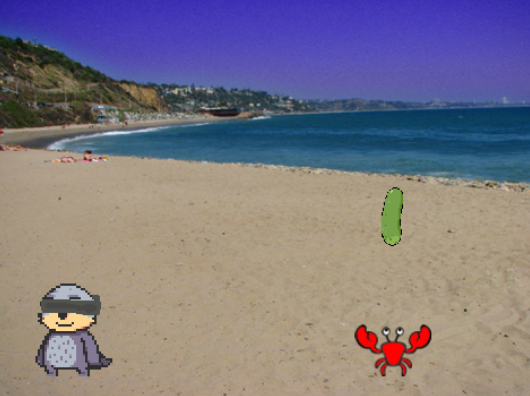
You’re at the beach with your friend Joey the Otter, and you’re playing a game. In the game Joey is wearing a blindfold, and you have to help them find their favourite food, which is pickles. What instructions would you give Joey to get to the pickle?
You might tell him to take a couple steps to his left and a few backwards. These instructions are in plain english. A computer algorithm processes information the same way, except that it uses and logic gates to execute commands. These logic gates are implemented using programming languages. We’re going to be using a very basic, visual computing “language” in this summer camp!
First of all, let’s watch the video here together. This video demonstrates how to get started coding with Scratch, which is an easy to learn computer programming language. After we’ve learned a little more about coding we’ll write a real program to help Joey reach the pickle.
Loops¶
Now, let’s open up Scratch and take a look at some fundamental programming functions. These are the building blocks of algorithms: how we will get computers to do what we want!
If you were giving instructions for making a cake, you might ask that something be repeated. For example you might say “stir the batter 30 times”. When creating an algorithm for a computer, we use what are called loops to ask the computer to repeat things. The simplest kind of loop is an infinite loop. This kind of loop will run forever (or until the computer crashes). In Scratch, these are callled ‘forever loops’. You put the instructions to be repeated forever inside the loop, like this:
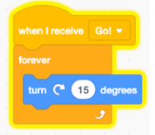
What this will do is spin Joey the Otter forever when a button ‘Go’ is clicked.
!Insert GIF here!
There are two more important kind of loops:
Repeat Loops
Repeat Until
A Repeat loop will be repreated a specified number of times:
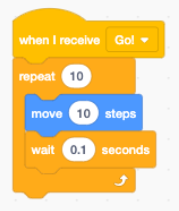
!Insert GIF here!
A Repeat Until loop will be repeated indefinitely until a certain condition is met (like a button is clicked):
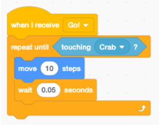
!Insert GIF here!
Now its your turn to test out using loops in Scratch. Go to this Scratch project. If you click on “Go” you’ll notice that nothing happens. This is because the computer is missing its instructions! You’ll need to go to “See Inside” to add the code in yourself.
We showed you one way to get Joey to the pickle in the earlier video, but now we’d like you to try doing it your own way. We’d like you to try using the loops you just learned about. In the English language, the instructions for Joey you can use are:
Move until you touch the crab
Turn 90 degrees (so Joey faces the pickle)
Move as many steps as you need to reach the pickle.
Try turning these instructions into Scratch code! Remember that your instructors are here to help.
Click on the plus to reveal a hint.
Take a look at the way Repeat Until loops are used.
Variables¶
The next thing we’ll add to our programming knowledge is variables. Variables are symbols that are used to represent something else. For example, we might say
x = 5
Then “x” is a variable, and it stores the value “5”. In math class variables always stand for numbers, like above, but with computers the variable could also store a word, or other information:
y = “daisy”
Or whatever you’d like. Watch the video here to see how variables work in Scratch!
Now it’s time to test out variables for yourself in Scratch. Your goal will be to make Joey say a tongue twister, like this:
! INSERT GIF HERE!
Joey should be saying “banana”, then “banana banana”, then “banana banana banana”, up until they say “banana” ten times in a row. You can start from the same Scratch project as before.
You’ll need to use loops as well as variables. You’ll find helpful the code below:
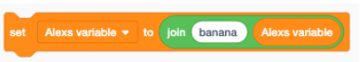
This code will concatenate two things. To concatenate means to join two or more things. In this case, this code will join together the word “banana” with whatever “Alexs variable” is. For example if Alex’s variable starts out as “orange”, then using the above code will make the variable “banana orange”.
Give it a try!
Click on the plus to reveal a hint.
This is a lot like getting Joey to count to ten, you might want to check back on the video in the last section for ideas.
Classical Gates¶
We said that classical computers are devices that do things to classical information, like bits. We also mentioned that computers will use gates to manipulat this binary information as part of a series of instructions: an algorithm .
There are a couple fundamental gates that you can implement in any programming language. They are:
The NOT gate
The AND gate
The OR gate
The NOT gate will do turn the input information to its opposite. If a zero is inputted to a NOT gate, and 1 will come out (since 1 and 0 are binary opposites). The same applies for an input of 1, which will turn into a zero.
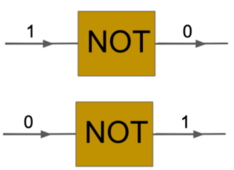
What will happen in this case?
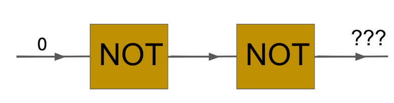
You will get 0 again! A not gate acting twice will cause the sequence 0 –> 1 –> 0.
Remember that bits can be stored using anything that can take two different values, like 0 or 1, or up or down, blue or yellow, or whatever else. Another way to think about bits is as True or False, instead of 1 or 0. Gates can be used to change any kind of bits, for example a NOT gate turns True into False.
Let’s take a look at an AND gate. What this gate will do is take two inputs, and compare them. The output of the gate will depend on the value of both inputs: if both are 1, then the output will be 1. Otherwise the output will be zero for all combinations of inputs.
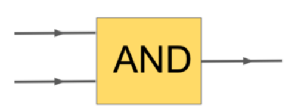
What will happen in this case?
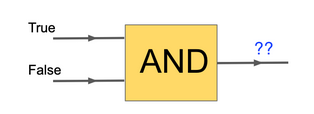
You will get False. Remember: True = 1 and False = 0. So TRUE AND FALSE= FALSE, since the AND gate will only output one in the case of both inputs being TRUE (1).
Let’s try one more question! What will you get as an output?
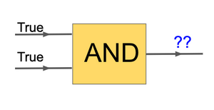
You will get True. Remember: True = 1 and False = 0. So TRUE AND TRUE = TRUE, since the AND gate will only output one in the case of both inputs being TRUE (1).
The last gate we will look at is an OR gate. This gate will output TRUE (1) if ONE of the inputs is TRUE (1). So the only time it outputs a FALSE (0) is when both inputs are FALSE (0).
Let’s try this out:
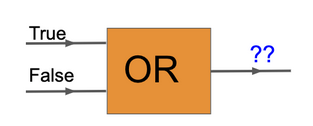
You will get True. Remember: True = 1 and False = 0. So TRUE AND FALSE = TRUE, since the OR gate will only output zero in the case of both inputs being FALSE (0).
If - Then Statements¶
We’ll add a final tool to our programming knowledge - “if-then” statements. An if-then statement is a line of code that lets the computer decide to do something, or to not do something based on whether the condition specified in the then content block is satisfied. In Scratch an if statement looks like this:
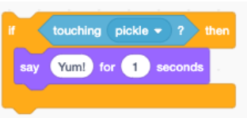
This code makes it so that, if Joey is touching the pickle, then they will say “Yum”. If they’re not touching the pickle then he won’t say anything. You can also see this explained in the video here.
You can also use the classical gates we talked about earlier to change what your “if-then” statements do. For example, we can use “NOT” like this:
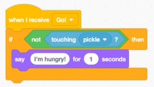
The green NOT block is found under the “operators” tab. When we run this code, Joey will say “I’m hungry!” whenever they’re not touching the pickle.
You can watch how this code is made and see it in action in the video here.
Coding Project¶
As your final mini-coding project for today, we’d like you to make the beach navigator scratch project do the following things:
Move to the crab.
Have Joey say “Ouch!” if touching the crab.
Move to the pickle.
Have Joey say “Yum!” if touching the pickle.
You can check below for hints!
Try to break down what you want to do into simple steps. Whats the very first thing you want Joey to do? How can you code just that?